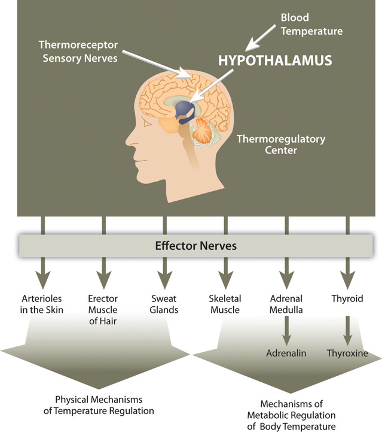
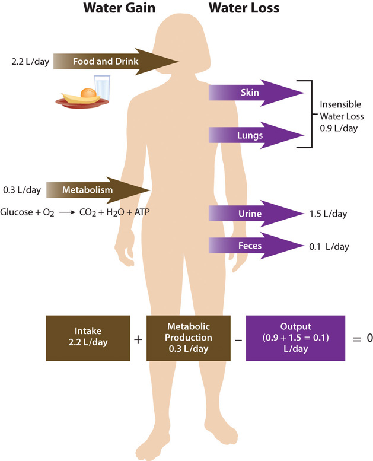
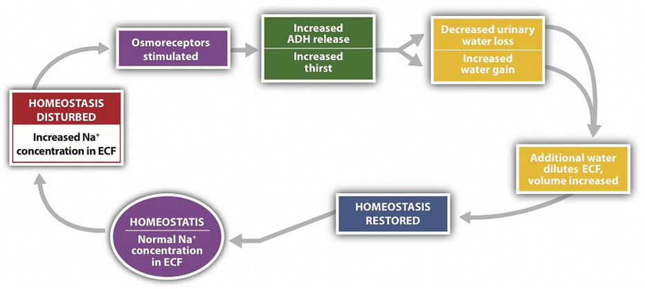
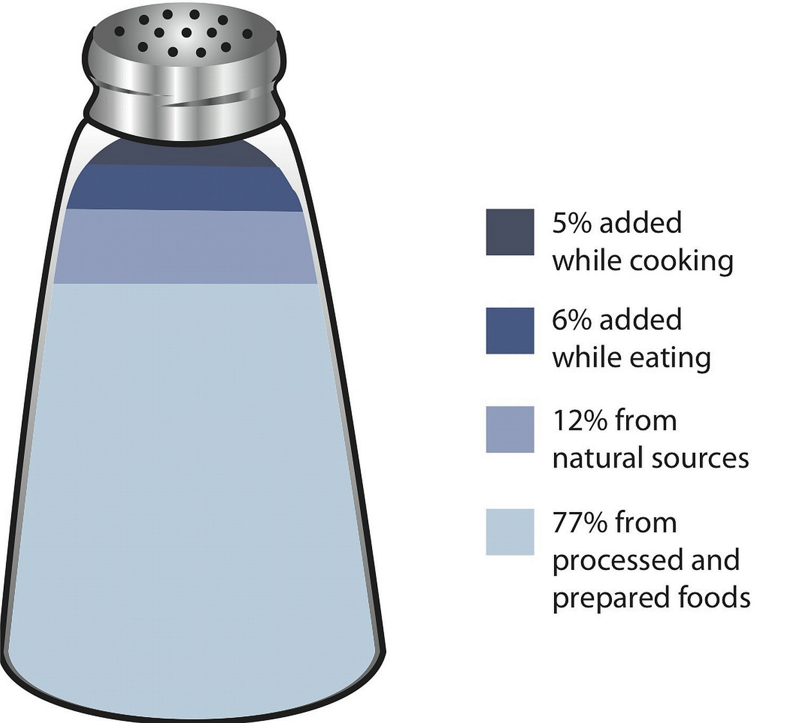
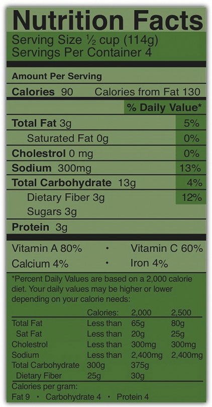
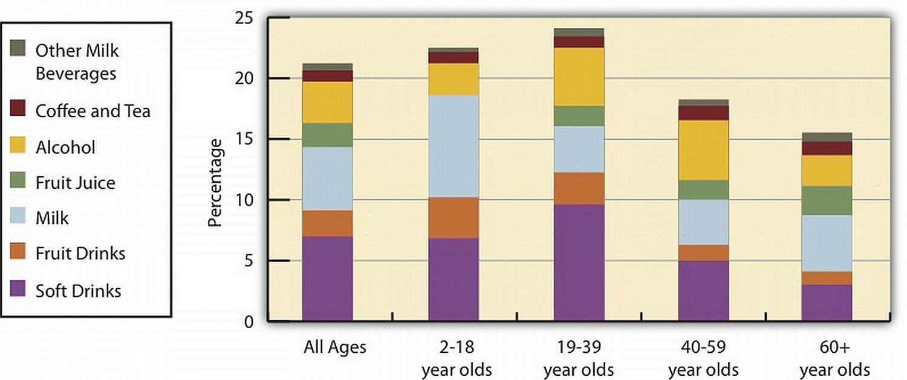
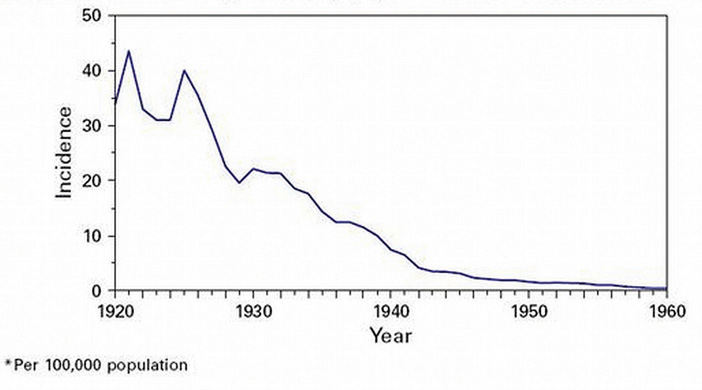

Heed your thirst and drink up, but drink mostly water.
Sport Safety: Dehydration
(click to see video)Dr. Casa, researcher and professor at the University of Connecticut, explains the importance of keeping hydrated during sports.
Maintaining the right level of water in your body is crucial to survival, as either too little or too much water in your body will result in less-than-optimal functioning. One mechanism to help ensure the body maintains water balance is thirst. Thirst is the result of your body’s physiology telling your brain to initiate the thought to take a drink. Sensory proteins detect when your mouth is dry, your blood volume too low, or blood electrolyte concentrations too high and send signals to the brain stimulating the conscious feeling to drink.
In the summer of 1965, the assistant football coach of the University of Florida Gators requested scientists affiliated with the university study why the withering heat of Florida caused so many heat-related illnesses in football players and provide a solution to increase athletic performance and recovery post-training or game. The discovery was that inadequate replenishment of fluids, carbohydrates, and electrolytes was the reason for the “wilting” of their football players. Based on their research, the scientists concocted a drink for the football players containing water, carbohydrates, and electrolytes and called it “Gatorade.” In the next football season the Gators were nine and two and won the Orange Bowl. The Gators’ success launched the sports-drink industry, which is now a multibillion-dollar industry that is still dominated by Gatorade.
The latest National Health and Nutrition Examination Survey, covering the period from 2005 to 2008, reports that about 50 percent of Americans consume sugary drinks daily.Ogden, C. et al. “Consumption of Sugar Drinks in the United States, 2005–2008.” Centers for Disease Control and Prevention. NCHS Data Brief, no. 71 (August 2011). http://www.cdc.gov/nchs/data/databriefs/db71.htm. Excess consumption of sugary soft drinks have been scientifically proven to increase the risk for dental caries, obesity, Type 2 diabetes, and cardiovascular disease. In addition to sugary soft drinks, beverages containing added sugars include fruit drinks, sports drinks, energy drinks and sweetened bottled waters. In Chapter 4 "Carbohydrates" we considered in detail the effects of sugary soft drinks on health. In this chapter we will consider sports drinks. Sports drinks are designed to rehydrate the body after excessive fluid depletion. Electrolytes in particular promote normal rehydration to prevent fatigue during physical exertion. Are they a good choice for achieving the recommended fluid intake? Are they performance and endurance enhancers like they claim? Who should drink them?
Typically, eight ounces of a sports drink provides between fifty and eighty calories and 14 to 17 grams of carbohydrate, mostly in the form of simple sugars. Sodium and potassium are the most commonly included electrolytes in sports drinks, with the levels of these in sports drinks being highly variable. The American College of Sports Medicine says a sports drink should contain 125 milligrams of sodium per 8 ounces as it is helpful in replenishing some of the sodium lost in sweat and promotes fluid uptake in the small intestine, improving hydration.
Are there better beverage options than sugary soft drinks and sports drinks to satisfy your thirst?
In this chapter we will consider the importance of maintaining fluid and electrolyte balance in the human body, the functions of water and electrolytes in the body, the consequences of getting too much or too little of water and electrolytes, the best dietary sources of these nutrients, and healthier beverage choices. After reading this chapter you will know what to look for in sports drinks and will be able to select the best products to keep hydrated.
Effects of Dehydration on Athletes
(click to see video)This video portrays the effects of hard-core training on the ability of an athlete’s body to adapt to extremes.
“We endorse thirst as the best scientifically supported method for you to use.”
Association of International Marathons and Distance Races
A human body is made up of mostly water. An adult consists of about 37 to 42 liters of water, or about eighty pounds. Fortunately, humans have compartmentalized tissues; otherwise we might just look like a water balloon! Newborns are approximately 70 percent water. Adult males typically are composed of about 60 percent water and females are about 55 percent water. (This gender difference reflects the differences in body-fat content, since body fat is practically water-free. This also means that if a person gains weight in the form of fat the percentage of total body water content declines.) As we age total body water content also diminishes so that by the time we are in our eighties the percent of water in our bodies has decreased to around 45 percent. Does the loss in body water play a role in the aging process? Alas, no one knows. But, we do know that dehydration accelerates the aging process whereas keeping hydrated decreases headaches, muscle aches, and kidney stones. Additionally a study conducted at the Fred Hutchinson Cancer Research Center in Seattle found that women who drank more than five glasses of water each day had a significantly decreased risk for developing colon cancer.Shannon J. E. et al. “Relationship of Food Groups and Water Intake to Colon Cancer Risk.” Cancer Epidemiol Biomarkers Prev 5, no. 7 (1996): 495–502. http://cebp.aacrjournals.org/content/5/7/495.long.
Although water makes up the largest percentage of body volume, it is not actually pure water but rather a mixture of cells, proteins, glucose, lipoproteins, electrolytes, and other substances. ElectrolytesSubstances that when dissolved in water disassociate into charged ions. are substances that, when dissolved in water, disassociate into charged ions. Positively charged electrolytes are called cations and negatively charged electrolytes are called anions. For example, in water sodium chloride (the chemical name for table salt) dissasociates into sodium cations (Na+) and chloride anions (Cl−). SolutesAny dissolved substances in a fluid. refers to all dissolved substances in a fluid, which may be charged, such as sodium (Na+), or uncharged, such as glucose. In the human body, water and solutes are distributed into two compartments: inside cells, called intracellular, and outside cells, called extracellular. The extracellular water compartment is subdivided into the spaces between cells (interstitial), blood plasma, and other bodily fluids (such as cerebrospinal fluid which surrounds and protects the brain and spinal cord). The composition of solutes differs between the fluid compartments. For instance, more protein is inside cells than outside and more chloride anions exist outside of cells than inside.
One of the essential homeostatic functions of the body is to maintain fluid balance and the differences in solute composition between cells and their surrounding environment. OsmoregulationThe scientific term that refers to the control of fluid balance and composition in the body. is the control of fluid balance and composition in the body. The processes involved keep fluids from becoming too dilute or too concentrated. Fluid compartments are separated by selectively permeable membranes, which allow some things, such as water, to move through while other substances require special transport proteins, channels, and often energy. The movement of water between fluid compartments happens by osmosisThe movement of water through a selectively permeable membrane from an area where it is highly concentrated to an area where it is not as concentrated., which is simply the movement of water through a selectively permeable membrane from an area where it is highly concentrated to an area where it is not so concentrated. Water is never transported actively; that is, it never takes energy for water to move between compartments (see Note 7.10 "Video 7.3"). Although cells do not directly control water movement, they do control movement of electrolytes and other solutes and thus indirectly regulate water movement by controlling where there will be regions of high and low concentrations.
Cells maintain their water volume at a constant level, but the composition of solutes in a cell is in a continuous state of flux. This is because cells are bringing nutrients in, metabolizing them, and disposing of waste products. To maintain water balance a cell controls the movement of electrolytes to keep the total number of dissolved particles, called osmolalityThe total number of dissolved particles in a solvent, such as water. the same inside and outside (Figure 7.1). The total number of dissolved substances is the same inside and outside a cell, but the composition of the fluids differs between compartments. For example, sodium exists in extracellular fluid at fourteen times the concentration as compared to that inside a cell.
If a cell is placed in a solution that contains fewer dissolved particles (known as a hypotonic solution) than the cell itself, water moves into the more concentrated cell, causing it to swell (Figure 7.1). Alternatively, if a cell is placed in a solution that is more concentrated (known as a hypertonic solution) water moves from inside the cell to the outside, causing it to shrink. Cells keep their water volume constant by pumping electrolytes in and out in an effort to balance the concentrations of dissolved particles on either side of their membranes. When a solution contains an equal concentration of dissolved particles on either side of the membrane, it is known as an isotonic solution.
You get up in the morning, flush wastes down the toilet, take a shower, brush your teeth, drink, eat, drive, wash the grime from your windshield, get to work, and drink coffee. Next to a fountain you eat lunch and down it with a glass of water, you use the toilet again and again, drive home, prepare dinner, etc. Add all the ways you use water every day and you still will not come close to the countless uses water has in the human body. Of all the nutrients, water is the most critical as its absence proves lethal within a few days. Organisms have adapted numerous mechanisms for water conservation. Water uses in the human body can be loosely categorized into four basic functions: transportation vehicle, medium for chemical reactions, lubricant/shock absorber, and temperature regulator.
Water is called the “universal solvent” because more substances dissolve in it than any other fluid. Molecules dissolve in water because of the hydrogen and oxygen molecules ability to loosely bond with other molecules. Molecules of water (H2O) surround substances, suspending them in a sea of water molecules. The solvent action of water allows for substances to be more readily transported. A pile of undissolved salt would be difficult to move throughout tissues, as would a bubble of gas or a glob of fat. Blood, the primary transport fluid in the body is about 78 percent water. Dissolved substances in blood include proteins, lipoproteins, glucose, electrolytes, and metabolic waste products, such as carbon dioxide and urea, all of which are either dissolved in the watery surrounding of blood to be transported to cells to support basic functions or are removed from cells to prevent waste build-up and toxicity. Blood is not just the primary vehicle of transport in the body, but also as a fluid tissue blood structurally supports blood vessels that would collapse in its absence. Similarly, the brain is 75 percent water, with the water in the brain providing structure.
Water is required for even the most basic chemical reactions. In Chapter 6 "Proteins" you learned that enzymes are proteins and proteins fold into their functional shape based on how their amino-acid sequences react with water. Once formed, enzymes must conduct their specific chemical reactions in a medium, which in all organisms is water. Water is an ideal medium for chemical reactions as it can store a large amount of heat, is electrically neutral, and has a pH of 7.0, meaning it is not acidic or basic. Additionally, water is involved in many enzymatic reactions as an agent to break bonds or, by its removal from a molecule, to form bonds.
Many may view the slimy products of a sneeze as gross, but sneezing is essential for removing irritants and could not take place without water. Mucus, which is not only essential to discharge nasal irritants, but also required for breathing, transportation of nutrients along the gastrointestinal tract, and elimination of waste materials through the rectum is composed of more than 90 percent water. Mucus is a front-line defense against injury and foreign invaders. It protects tissues from irritants, entraps pathogens, and contains immune-system cells that destroy pathogens. Water is the main component of the lubricating fluid between joints and eases the movement of articulated bones.
The aqueous and vitreous humors, which are fluids that fill the extra space in the eyes and the cerebrospinal fluid surrounding the brain and spinal cord are primarily water and buffer these organs against sudden changes in the environment. Watery fluids surrounding organs provide both chemical and mechanical protection. Just two weeks after fertilization water fills the amniotic sac in a pregnant woman providing a cushion of protection for the developing embryo.
Another homeostatic function of the body, termed thermoregulationThe balance of heat gain with heat loss in the body. is to balance heat gain with heat loss and body water plays an important role in accomplishing this. Human life is supported within a narrow range of temperature, with the temperature set point of the body being 98.6°F (37°C). Too low or too high of a temperature causes enzymes to stop functioning and metabolism is haulted. At 82.4°F (28°C) muscle failure occurs and hypothermia sets in. At the opposite extreme of 111.2°F (44°C) the central nervous system fails and death results. Water is good at storing heat, an attribute referred to as heat capacityThe capability of a substance to store heat. and thus helps maintain the temperature set point of the body despite changes in the surrounding environment.
There are several mechanisms in place that move body water from place to place as a method to distribute heat in the body and equalize body temperature (Figure 7.2). The hypothalamus in the brain is the thermoregulatory center. The hypothalamus contains special protein sensors that detect blood temperature. The skin also contains temperature sensors that respond quickly to changes in immediate surroundings. In response to cold sensors in the skin, a neural signal is sent to the hypothalamus, which then sends a signal to smooth muscle tissue surrounding blood vessels causing them to constrict and reduce blood flow. This reduces heat lost to the environment. The hypothalamus also sends signals to muscles to erect hairs and shiver and to endocrine glands like the thyroid to secrete hormones capable of ramping up metabolism. These actions increase heat conservation and stimulate its production in the body in response to cooling temperatures.
Figure 7.2
Thermoregulation is the ability of an organism to maintain body temperature despite changing environmental temperatures.
When body temperature rises, as what occurs during exercise, the hypothalamus detects an increase in blood temperature. In response, the hypothalamus sends a signal to the smooth muscle of blood vessels causing them to dilate so that more blood flows to the body’s periphery. Once on the skin, extra heat exits the body via perspiration (sweat), which is 98 to 99 percent water. Water on the skin’s surface evaporates, a process that takes energy and results in the loss of heat, thereby cooling the body. Perspiration is a process that intertwines temperature homeostasis with fluid and electrolyte homeostasis. Water and electrolytes lost in sweat need to be replenished in order to maintain fluid and electrolyte balance. In Section 7.3 "Regulation of Water Balance", we will explain the physiological mechanisms that are involved in maintaining fluid and electrolyte balance in the body.
As you eat a bite of food, the salivary glands secrete saliva. As the food enters your stomach, gastric juice is secreted. As it enters the small intestine, pancreatic juice is secreted. Each of these fluids contains a great deal of water. How is that water replaced in these organs? What happens to the water now in the intestines? In a day there is an exchange of about 10 liters of water among the body’s organs. The osmoregulation of this exchange involves complex communication between the brain, kidneys, and endocrine system. A homeostatic goal for a cell, a tissue, an organ, and an entire organism is to balance water output with water input.
Total water ouput per day averages 2.5 liters. This must be balanced with water input. Our tissues produce around 300 milliliters of water per day through metabolic processes. The remainder of water output must be balanced by drinking fluids and eating solid foods. The average fluid consumption per day is 1.5 liters, and water gained from solid foods approximates 700 milliliters.
Figure 7.3 Daily Fluid Loss and Gain
The Food and Nutrition Board of the Institute of Medicine (IOM) has set the Adequate Intake (AI) for water for adult males at 3.7 liters (15.6 cups) and at 2.7 liters (11 cups) for adult females.Institute of Medicine Panel on Dietary Reference Intakes for Electrolytes and Water. Dietary Reference Intakes for Water, Potassium, Sodium, Chloride, and Sulfate. (Washington, D.C.: National Academies Press, 2005). http://www.nap.edu/openbook.php?record_id=10925&page=73. These intakes are higher than the average intake of 2.2 liters. It is important to note that the AI for water includes water from all dietary sources; that is, water coming from food as well as beverages. People are not expected to consume 15.6 or 11 cups of pure water per day. In America, approximately 20 percent of dietary water comes from solid foods. See Table 7.1 "Water Content in Foods" for the range of water contents for selected food items. Beverages includes water, tea, coffee, sodas, and juices.
Table 7.1 Water Content in Foods
| Percentage | Food Item |
|---|---|
| 90–99 | Nonfat milk, cantaloupe, strawberries, watermelon, lettuce, cabbage, celery, spinach, squash |
| 80–89 | Fruit juice, yogurt, apples, grapes, oranges, carrots, broccoli, pears, pineapple |
| 70–79 | Bananas, avocados, cottage cheese, ricotta cheese, baked potato, shrimp |
| 60–69 | Pasta, legumes, salmon, chicken breast |
| 50–59 | Ground beef, hot dogs, steak, feta cheese |
| 40–49 | Pizza |
| 30–39 | Cheddar cheese, bagels, bread |
| 20–29 | Pepperoni, cake, biscuits |
| 10–19 | Butter, margarine, raisins |
| 1–9 | Walnuts, dry-roasted peanuts, crackers, cereals, pretzels, peanut butter |
| 0 | Oils, sugars |
Source: US Department of Agriculture, Agricultural Research Service. 2010. National Nutrient Database for Standard Reference, Release 23. Nutrient Data Laboratory Home Page, http://www.ars.usda.gov/ba/bhnrc/ndl.
There is some debate over the amount of water required to maintain health because there is no consistent scientific evidence proving that drinking a particular amount of water improves health or reduces the risk of disease. In fact, kidney-stone prevention seems to be the only premise for water-consumption recommendations. You may be surprised to find out that the commonly held belief that people need to drink eight 8-ounce glasses of water per day isn’t an official recommendation and isn’t based on any scientific evidence! The amount of water/fluids a person should consume every day is actually variable and should be based on the climate a person lives in, as well as their age, physical activity level, and kidney function. No maximum for water intake has been set.
ThirstAn osmoregulatory mechanism to increase water input. is an osmoregulatory mechanism to increase water input. The thirst mechanism is activated in response to changes in water volume in the blood, but is even more sensitive to changes in blood osmolality. Blood osmolality is primarily driven by the concentration of sodium cations. The urge to drink results from a complex interplay of hormones and neuronal responses that coordinate to increase water input and contribute toward fluid balance and composition in the body. The “thirst center” is contained within the hypothalamus, a portion of the brain that lies just above the brain stem. In older people the thirst mechanism is not as responsive and as we age there is a higher risk for dehydration. Thirst happens in the following sequence of physiological events:
The physiological control of thirst is the back-up mechanism to increase water input. Fluid intake is controlled primarily by conscious eating and drinking habits dependent on social and cultural influences. For example, you might have a habit of drinking a glass of orange juice and eating a bowl of cereal every morning before school or work. Most American adolescents have a daily habit of soft-drink consumption. Soft-drink consumption is influenced by demographics, access to soft drinks, social impacts, and personal behavior.
As stated, daily water output averages 2.5 liters. There are two types of outputs. The first type is insensible water loss, meaning we are unaware of it. The body loses about 400 milliliters of its daily water output through exhalation. Another 500 milliliters is lost through our skin. The second type of output is sensible water loss, meaning we are aware of it. Urine accounts for about 1,500 milliliters of water output, and feces account for roughly 100 milliliters of water output. Regulating urine output is a primary function of the kidneys, and involves communication with the brain and endocrine system.
The kidneys are two bean-shaped organs, each about the size of a fist and located on either side of the spine just below the rib cage (Figure 7.4 "Kidneys"). The kidneys filter about 190 liters of blood and produce (on average) 1.5 liters of urine per day. Urine is mostly water, but it also contains electrolytes and waste products, such as urea. The amount of water filtered from the blood and excreted as urine is dependent on the amount of water in, and the electrolyte composition of, blood.
Kidneys have protein sensors that detect blood volume from the pressure, or stretch, in the blood vessels of the kidneys. When blood volume is low, kidney cells detect decreased pressure and secrete the enzyme, renin. Renin travels in the blood and cleaves another protein into the active hormone, angiotensin. Angiotensin targets three different organs (the adrenal glands, the hypothalamus, and the muscle tissue surrounding the arteries) to rapidly restore blood volume and, consequently, pressure.
First, angiotensin travels to the outer perimeter of the adrenal glands and stimulates release of the hormone aldosterone. Aldosterone travels back to the kidneys and stimulates the sodium-potassium pump. As a result of the pump’s work, the blood reabsorbs the sodium from the liquid that has already been filtered by the kidneys. Water follows sodium into the blood by osmosis, resulting in less water in the urine and restored fluid balance and composition of blood.
Next, angiotensin travels to the hypothalamus where it stimulates the thirst mechanism and the release of antidiuretic hormone. Antidiuretic hormone travels back to the kidneys where it increases water reabsorption.
Lastly, angiotensin targets smooth muscle tissue surrounding arteries, causing them to contract (narrow) the blood vessels, which assists in elevating blood pressure.
Figure 7.5
Sodium and fluid balance are intertwined.
Osmoreceptors (specialized protein receptors) in the hypothalamus detect sodium concentration in the blood. In response to a high sodium level, the hypothalamus activates the thirst mechanism and concurrently stimulates the release of antidiuretic hormone. Thus, it is not only kidneys that stimulate antidiuretic- hormone release, but also the hypothalamus. This dual control of antidiuretic hormone release allows for the body to respond to both decreased blood volume and increased blood osmolality.
Cells in the adrenal glands sense when sodium levels are low, and when potassium levels are high, in the blood. In response to either stimulus, they release aldosterone. Therefore, aldosterone is released in response to angiotensin stimulation and is also controlled by blood electrolyte concentrations. In either case, aldosterone communicates the same message, which is to increase sodium reabsorption and consequently water reabsorption. In exchange, potassium is excreted.
The mechanisms involved in regulating water input and output are intertwined with those controlling electrolyte balance. In a healthy individual, this multilevel coordinated control of fluid and electrolyte levels in the body ensures homeostasis. However, in a person with heart failure, the crosstalk between organs can have dire consequences. Heart failure results in a decrease in blood output from the heart, which lowers blood pressure. In response to the lower blood pressure the kidneys release renin, leading to the release of antidiuretic hormone. Antidiuretic hormone acts on the kidneys and increases water reabsorption, thereby increasing blood volume and pressure. This makes the heart work harder and exacerbates the heart condition. To block this response, people with heart failure are treated with drugs that block the kidneys’ compensatory response. Diuretics are drugs that act either by inhibiting the actions of antidiuretic hormone or by promoting sodium excretion in the urine. This increases water output and blood pressure is reduced. Diuretics, along with other drugs, are useful in treating heart failure and in decreasing blood pressure in people with hypertension.
Cells are about 75 percent water and blood plasma is about 95 percent water. Why then, does the water not flow from blood plasma to cells? The maintenance of the unequal volumes of water between fluid compartments is achieved by balancing the force of water (hydrostatic pressure) against the force of all dissolved substances. ConcentrationThe amount of particles in a set volume of water. means the amount of particles in a set volume of water. (Recall that individual solutes can differ in concentration between the intracellular and extracellular fluids, but the total concentration of all dissolved substances is equal.)
The force driving the water movement through the selectively permeable membrane is the higher solute concentration on the one side. Solutes at different concentrations on either side of a selectively permeable membrane exert a force, called osmotic pressureThe force exerted by solutes at different concentrations on either side of a selectively permeable membrane.. The higher concentration of solutes on one side compared to the other of the U-tube exerts osmotic pressure, pulling the water to a higher volume on the side of the U-tube containing more dissolved particles. When the osmotic pressure is equal to the pressure of the water on the selectively permeable membrane, net water movement stops (though it still diffuses back and forth at an equal rate).
One equation exemplifying equal concentrations but different volumes is the following
5 grams of glucose in 1 liter = 10 grams of glucose in 2 liters (5g/L = 5g/L)The differences in concentrations of particular substances provide concentration gradients that cells can use to perform work. A concentration gradient is a form of potential energy, like water above a dam. When water falls through a dam the potential energy is changed to moving energy (kinetic), that in turn is captured by turbines. Similarly, when an electrolyte at higher concentration in the extracellular fluid is transported into a cell, the potential energy is harnessed and used to perform work.
Cells are constantly transporting nutrients in and wastes out. How is the concentration of solutes maintained if they are in a state of flux? This is where electrolytes come into play. The cell (or more specifically the numerous sodium-potassium pumps in its membrane) continuously pumps sodium ions out to establish a chemical gradient. The transport protein, called the glucose symporter, uses the sodium gradient to power glucose movement into the cell. Sodium and glucose both move into the cell. Water passively follows the sodium. To restore balance, the sodium-potassium pump transfers sodium back to the extracellular fluid and water follows (see Note 7.26 "Interactive 7.1"). Every cycle of the sodium-potassium pump involves the movement of three sodium ions out of a cell, in exchange for two potassium ions into a cell. To maintain charge neutrality on the outside of cells every sodium cation is followed by a chloride anion. Every cycle of the pump costs one molecule of ATP (adenosine triphosphate). The constant work of the sodium-potassium pump maintains the solute equilibrium and consequently, water distribution between intracellular and extracellular fluids.
The unequal movement of the positively charged sodium and potassium ions makes intracellular fluid more negatively charged than the extracellular fluid. This charge gradient is another source of energy that a cell uses to perform work. You will soon learn that this charge gradient and the sodium-potassium pump are also essential for nerve conduction and muscle contraction. The many functions of the sodium-potassium pump in the body account for approximately a quarter of total resting energy expenditure.
View this animation of the sodium-potassium pump maintaining fluid balance in cells.
http://nutrition.jbpub.com/resources/animations.cfm?id=27&debug=0
The sodium-potassium pump is the primary mechanism for cells to maintain water balance between themselves and their surrounding environment.
Sodium, is vital not only for maintaining fluid balance but also for many other essential functions. In contrast to many minerals, sodium absorption in the small intestine is extremely efficient and in a healthy individual all excess sodium is excreted by the kidneys. In fact, very little sodium is required in the diet (about 200 milligrams) because the kidneys actively reabsorb sodium. Kidney reabsorption of sodium is hormonally controlled, allowing for a relatively constant sodium concentration in the blood.
The second notable function of sodium is in nerve impulse transmission. Nerve impulse transmission results from the transport of sodium cations into a nerve cell, which creates a charge difference (or voltage) between the nerve cell and its extracellular environment. Similar to how a current moves along a wire, a sodium current moves along a nerve cell. Stimulating a muscle contraction also involves the movement of sodium ions as well as other ion movements. For a muscle to contract, a nerve impulse travels to a muscle. The movement of the sodium current in the nerve communicates to the muscle by releasing the neurotransmitter, acetylcholine. Acetylcholine signals sodium channels in the muscle to open and sodium rushes in, creating another current that travels along the muscle eventually culminating in contraction. In both the nerve cell and the muscle cell, the sodium that went in during a stimulus now has to be moved out by the sodium-potassium pump.
Sodium is essential for nutrient absorption in the small intestine and also for nutrient reabsorption in the kidney. Amino acids, glucose, and water must make their way from the small intestine to the blood. To do so they pass through intestinal cells on their way to the blood. The transport of nutrients through intestinal cells is facilitated by the sodium-potassium pump, which by moving sodium out of the cell, creates a higher sodium concentration outside of the cell (requiring ATP).
Sweating is a homeostatic mechanism for maintaining body temperature, which influences fluid and electrolyte balance. Sweat is mostly water but also contains some electrolytes, mostly sodium and chloride. Under normal environmental conditions (i.e., not hot, humid days) water and sodium loss through sweat is negligible, but is highly variable among individuals. It is estimated that sixty minutes of high-intensity physical activity, like playing a game of tennis, can produce approximately one liter of sweat; however the amount of sweat produced is highly dependent on environmental conditions. A liter of sweat typically contains between 1 and 2 grams of sodium and therefore exercising for multiple hours can result in a high amount of sodium loss in some people. Additionally, hard labor can produce substantial sodium loss through sweat. In either case, the lost sodium is easily replaced in the next snack or meal.
In athletes hyponatremia, or a low blood-sodium level, is not so much the result of excessive sodium loss in sweat, but rather drinking too much water. The excess water dilutes the sodium concentration in blood. Illnesses causing vomiting, sweating, and diarrhea may also cause hyponatremia. The symptoms of hyponatremia, also called water intoxication since it is often the root cause, include nausea, muscle cramps, confusion, dizziness, and in severe cases, coma and death. The physiological events that occur in water intoxication are the following:
Hyponatremia in endurance athletes (such as marathon runners) can be avoided by drinking the correct amount of water, which is about 1 cup every twenty minutes during the event. Sports drinks are better at restoring fluid and blood-glucose levels than replacing electrolytes. During an endurance event you would be better off drinking water and eating an energy bar that contains sugars, proteins, and electrolytes. The American College of Sports Medicine suggests if you are exercising for longer than one hour you eat one high carbohydrate (25–40 grams) per hour of exercise along with ample water.Convertino, V. A. et al. “American College of Sports Medicine Position Stand. Exercise and Fluid Replacement.” US National Library of Medicine, National Institutes of Health. Medicine and Science in Sports and Exercise 28, no. 1 (January 1996): i–vii. http://www.ncbi.nlm.nih.gov/pubmed/9303999. Watch out for the fat content, as sometimes energy bars contain a hefty dose. If you’re not exercising over an hour at high intensity, you can skip the sports drinks, but not the water. For those who do not exercise or do so at low to moderate intensity, sports drinks are another source of extra calories, sugar, and salt.
The IOM has set an AI level for sodium for healthy adults between the ages of nineteen and fifty at 1.5 grams (1,500 milligrams). (See Table 7.2 "Dietary Reference Intakes for Sodium".) Table salt is approximately 40 percent sodium and 60 percent chloride. As a reference point, only ⅔ teaspoon of salt is needed in the diet to meet the AI for sodium. The AI takes into account the amount of sodium lost in sweat during recommended physical activity levels and additionally provides for the sufficient intake of other nutrients, such as chloride, meaning that to get all the other nutrients in our diet, we have to allow for a higher intake of sodium. The Tolerable Upper Intake Level (UL) for sodium is 2.3 grams per day for adults. (Just over 1 teaspoon of salt contains the 2.3 grams of sodium recommended). The UL is considered appropriate for healthy individuals but not those with hypertension (high blood pressure). The IOM estimates that greater than 95 percent of men and 75 percent of women in America consume salt in excess of the UL. Many scientific studies demonstrate that reducing salt intake prevents hypertension, is helpful in reducing blood pressure after hypertension is diagnosed, and reduces the risk for cardiovascular disease. The IOM recommends that people over fifty, African Americans, diabetics, and those with chronic kidney disease should consume no more than 1.5 grams of sodium per day. The American Heart Association (AHA) states that all Americans, not just those listed, should consume less than 1.5 grams of sodium per day to prevent cardiovascular disease. The AHA recommends this because millions of people have risk factors for hypertension and there is scientific evidence supporting that lower-sodium diets are preventive against hypertension.
Table 7.2 Dietary Reference Intakes for Sodium
| Age Group | Adequate Intake (mg/day) | Tolerable Upper Intake Level (mg/day) |
|---|---|---|
| Infants (0–6 months) | 120 | ND |
| Infants (6–12 months) | 370 | ND |
| Children (1–3 years) | 1,000 | 1,500 |
| Children (4–8 years) | 1,200 | 1,900 |
| Children (9–13 years) | 1,500 | 2,200 |
| Adolescents (14–18 years) | 1,500 | 2,300 |
| Adults (19–50 years) | 1,500 | 2,300 |
| Adults (50–70 years) | 1,300 | 2,300 |
| Adults (> 70 years) | 1,200 | 2,300 |
| ND = not determined | ||
Source: Institute of Medicine. Dietary Reference Intakes: Water, Potassium, Sodium, Chloride, and Sulfate. February 11, 2004. http://www.iom.edu/Reports/2004/Dietary-Reference-Intakes-Water-Potassium-Sodium-Chloride-and-Sulfate.aspx.
Most sodium in the typical American diet comes from processed and prepared foods. Manufacturers add salt to foods to improve texture and flavor, and also as a preservative. The amount of salt in similar food products varies widely. Some foods, such as meat, poultry, and dairy foods, contain naturally-occurring sodium. For example, one cup of low-fat milk contains 107 milligrams of sodium. Naturally-occurring sodium accounts for less than 12 percent of dietary intake in a typical diet. For the sodium contents of various foods see Table 7.3 "Sodium Contents of Selected Foods".
Figure 7.6 Dietary Sources of Sodium
Table 7.3 Sodium Contents of Selected Foods
| Food Group | Serving Size | Sodium (mg) |
|---|---|---|
| Breads, all types | 1 oz. | 95–210 |
| Rice Chex cereal | 1 ¼ c. | 292 |
| Raisin Bran cereal | 1 c. | 362 |
| Granola bar | 1 bar | 83 |
| Frozen pizza, plain, cheese | 4 oz. | 450–1200 |
| Frozen vegetables, all types | ½ c. | 2–160 |
| Salad dressing, regular fat, all types | 2 Tbsp. | 110–505 |
| Salsa | 2 Tbsp. | 150–240 |
| Soup (tomato), reconstituted | 8 oz. | 700–1260 |
| Tomato juice | 8 oz. (~1 c.) | 340–1040 |
| Potato chips | 1 oz. (28.4 g) | 120–180 |
| Tortilla chips | 1 oz. (28.4 g) | 105–160 |
| Pretzels | 1 oz. (28.4 g) | 290–560 |
| Potato | 1 medium | 1–5 |
| Pork | 3 oz. | 59 |
| Chicken | (½ breast) | 69 |
| Chicken fast food dinner | 2243 | |
| Chicken noodle soup | 1 c. | 1107 |
| Ham | 3 oz. | 1114 |
| Dill pickle | 1 | 928 |
| Sweet pickle | 1 | 128 |
| Soy sauce | 1 Tbsp. | 1029 |
| Corn on cob | 1 ear | 1 |
| Canned corn | 1 c. | 384 |
| Baked beans, canned | 1 c. | 856 |
| Hot dog | 1 | 639 |
| Burger, fast-food | 1 | 990 |
| Catsup | 1 Tbsp. | 156 |
| Steak | 3 oz. | 55 |
| Canned tuna | 3 oz. | 384 |
| Fresh tuna | 3 oz. | 50 |
| Dry-roasted peanuts | 1 c. | 986 |
| Cheddar cheese | 1 oz. | 176 |
| American cheese | 1 oz. | 406 |
| Tap water | 8 oz. | 12 |
To find out the sodium content of other foods visit the USDA National Nutrient Database for Standard Reference, Release 17.
http://www.nal.usda.gov/fnic/foodcomp/Data/SR17/wtrank/sr17a307.pdf.
Figure 7.7
Sodium levels in milligrams is a required listing on a Nutrition Facts label.
The Nutrition Facts panel displays the amount of sodium (in milligrams) per serving of the food in question (Figure 7.7). Food additives are often high in sodium, for example, monosodium glutamate (MSG) contains 12 percent sodium. Additionally, baking soda, baking powder, disodium phosphate, sodium alginate, and sodium nitrate or nitrite contain a significant proportion of sodium. When you see a food’s Nutrition Facts label, you can check the ingredients list to identify the source of the added sodium. Various claims about the sodium content in foods must be in accordance with Food and Drug Administration (FDA) regulations (Table 7.4 "Food Packaging Claims Regarding Sodium").
Table 7.4 Food Packaging Claims Regarding Sodium
| Claim | Meaning |
|---|---|
| “Light in Sodium” or “Low in Sodium” | Sodium is reduced by at least 50 percent |
| “No Salt Added” or “Unsalted” | No salt added during preparation and processing* |
| “Lightly Salted” | 50 percent less sodium than that added to similar food |
| “Sodium Free” or “Salt Free” | Contains less than 5 mg sodium per serving |
| “Very Low Salt” | Contains less than 35 mg sodium per serving |
| “Low Salt” | Contains less than 140 mg sodium per serving |
| *Must also declare on package “This is not a sodium-free food” if food is not sodium-free | |
Source: US Food and Drug Administration. “Food Labeling Guide.” Revised October 2009. Accessed October 2, 2011. http://www.fda.gov/Food/GuidanceComplianceRegulatoryInformation/GuidanceDocuments/FoodLabelingNutrition/FoodLabelingGuide/ucm064911.htm.
To decrease your sodium intake, become a salt-savvy shopper by reading the labels and ingredients lists of processed foods and choosing those lower in salt. Even better, stay away from processed foods and control the seasoning of your foods. Eating a diet with less salty foods diminishes salt cravings so you may need to try a lower sodium diet for a week or two before you will be satisfied with the less salty food.
For those with hypertension or those looking for a way to decrease salt use, using a salt substitute for food preparation is one option. However, many salt substitutes still contain sodium, just in lesser amounts than table salt. Also, remember that most salt in the diet is not from table-salt use, but from processed foods. Salt substitutes often replace the sodium with potassium. People with kidney disorders often have problems getting rid of excess potassium in the diet and are advised to avoid salt substitutes containing potassium. People with liver disorders should also avoid salt substitutes containing potassium because their treatment is often accompanied by potassium dysregulation. Table 7.5 "Salt Substitutes" displays the sodium and potassium amounts in some salt substitutes.
Table 7.5 Salt Substitutes
| Product | Serving Size | Sodium (mg) | Potassium (mg) |
|---|---|---|---|
| Salt | 1 tsp. | 2,300 | 0 |
| Mrs. Dash | 1 tsp. | 0 | 40 |
| Spike (Salt-Free) | 1 tsp. | 0 | 96 |
| Veg-It | 1 tsp. | <65 | <65 |
| Adolph’s Sodium-Free Tenderizer | ¼ tsp. | 0 | 420 |
| Accent Low-Sodium Seasoning | 1 tsp. | 600 | 0 |
| Salt Sense | 1 tsp. | 1,560 | 0 |
| Pleasoning Mini-Mini Salt | 1 tsp. | 440 | 0 |
| Morton Lite Salt | 1 tsp. | 1,100 | 1,500 |
| Estee Salt-It | 1 tsp. | 0 | 3,520 |
| Morton Nature’s Seasons | 1 tsp. | 1,300 | 2,800 |
| Morton Salt Substitute | 1 tsp. | 0 | 2,730 |
| No Salt | 1 tsp. | 5 | 2,500 |
| Nu-Salt | 1 tsp. | 0 | 529 |
Source: University of Wisconsin Hospitals and Clinics Authority. “Health Facts for You: Guidelines for a Low Sodium Diet.” March 2011. http://www.uhs.wisc.edu/health-topics/nutrition-fitness-and-heart-health/documents/Sodium.pdf.
Table salt may seem an essential ingredient of good food, but there are others that provide alternative taste and zest to your foods. See Table 7.6 "Salt Alternatives" for an AHA list of alternative food seasonings.
Table 7.6 Salt Alternatives
| Seasoning | Foods |
|---|---|
| Allspice | Lean ground meats, stews, tomatoes, peaches, applesauce, cranberry sauce, gravies, lean meat |
| Almond extract | Puddings, fruits |
| Caraway seeds | Lean meats, stews, soups, salads, breads, cabbage, asparagus, noodles |
| Chives | Salads, sauces, soups, lean-meat dishes, vegetables |
| Cider vinegar | Salads, vegetables, sauces |
| Cinnamon | Fruits, breads, pie crusts |
| Curry powder | Lean meats (especially lamb), veal, chicken, fish, tomatoes, tomato soup, mayonnaise, |
| Dill | fish sauces, soups, tomatoes, cabbages, carrots, cauliflower, green beans, cucumbers, potatoes, salads, macaroni, lamb |
| Garlic (not garlic salt) | Lean meats, fish, soups, salads, vegetables, tomatoes, potatoes |
| Ginger | Chicken, fruits |
| Lemon juice | Lean meats, fish, poultry, salads, vegetables |
| Mace | Hot breads, apples, fruit salads, carrots, cauliflower, squash, potatoes, veal, lamb |
| Mustard (dry) | lean ground meats, lean meats, chicken, fish, salads, asparagus, broccoli, Brussels sprouts, cabbage, mayonnaise, sauces |
| Nutmeg | Fruits, pie crust, lemonade, potatoes, chicken, fish, lean meatloaf, toast, veal, pudding |
| Onion powder | Lean meats, stews, vegetables, salads, soups |
| Paprika | Lean meats, fish, soups, salads, sauces, vegetables |
| Parsley | Lean meats, fish, soups, salads, sauces, vegetables |
| Peppermint extract | Puddings, fruits |
| Pimiento | Salads, vegetables, casserole dishes |
| Rosemary | Chicken, veal, lean meatloaf, lean beef, lean pork, sauces, stuffings, potatoes, peas, lima beans |
| Sage | Lean meats, stews, biscuits, tomatoes, green beans, fish, lima beans, onions, lean pork |
| Savory | Salads, lean pork, lean ground meats, soups, green beans, squash, tomatoes, lima beans, peas |
| Thyme | Lean meats (especially veal and lean pork), sauces, soups, onions, peas, tomatoes, salads |
| Turmeric | Lean meats, fish, sauces, rice |
Source: American Heart Association. “Shaking the Salt Habit.” Updated June 6, 2012. http://www.heart.org/HEARTORG/Conditions/HighBloodPressure/PreventionTreatmentofHighBloodPressure/Shaking-the-Salt-Habit_UCM_303241_Article.jsp.
Do you think many alternative spices are too expensive? Spices are much cheaper in bulk, and many grocery stores and ethnic markets carry them in this way. For example, when purchased in bulk, cumin is, on average, only one dollar per ounce, a quantity that takes many meals to exhaust.
Chloride is the primary anion in extracellular fluid. In addition to passively following sodium, chloride has its own protein channels that reside in cell membranes. These protein channels are especially abundant in the gastrointestinal tract, pancreas, and lungs.
Chloride aids in fluid balance mainly because it follows sodium in order to maintain charge neutrality. Chloride channels also play a role in regulating fluid secretion, such as pancreatic juice into the small intestine and the flow of water into mucus. Fluid secretion and mucus are important for many of life’s processes. Their importance is exemplified in the signs and symptoms of the genetic disease, cystic fibrosis.
Cystic fibrosis, or CF, is one of the most prevalent inherited diseases in people of European descent. It is caused by a mutation in a protein that transports chloride ions out of the cell. CF’s signs and symptoms include salty skin, poor digestion and absorption (leading to poor growth), sticky mucus accumulation in the lungs (causing increased susceptibility to respiratory infections), liver damage, and infertility.
When chloride channels do not transport chloride out of cells, the following signs and symptoms of CF become apparent:
Chloride has several other functions in the body, most importantly in acid-base balance. Blood pH is maintained in a narrow range and the number of positively charged substances is equal to the number of negatively charged substances. Proteins, such as albumin, as well as bicarbonate ions and chloride ions, are negatively charged and aid in maintaining blood pH. Hydrochloric acid (a gastric acid composed of chlorine and hydrogen) aids in digestion and also prevents the growth of unwanted microbes in the stomach. Immune-system cells require chloride, and red blood cells use chloride anions to remove carbon dioxide from the body.
Low dietary intake of chloride and more often diarrhea can cause low blood levels of chloride. Symptoms typically are similar to those of hyponatremia and include weakness, nausea, and headache. Excess chloride in the blood is rare with no characteristic signs or symptoms.
Most chloride in the diet comes from salt. (Salt is 60 percent chloride.) A teaspoon of salt equals 5.6 grams, with each teaspoon of salt containing 3.4 grams of chloride and 2.2 grams of sodium. The chloride AI for adults, set by the IOM, is 2.3 grams. Therefore just ⅔ teaspoon of table salt per day is sufficient for chloride as well as sodium. The AIs for other age groups are listed in Table 7.7 "Adequate Intakes for Chloride".
Table 7.7 Adequate Intakes for Chloride
| Age Group | g/day |
|---|---|
| Infants (0–6 months) | 0.18 |
| Infants (6–12 months) | 0.57 |
| Children (1–3 years) | 1.50 |
| Children (4–8 years) | 1.90 |
| Children (9–13 years) | 2.30 |
| Adolescents (14–18 years) | 2.30 |
| Adults (19–50 years) | 2.30 |
| Adults (51–70 years) | 2.00 |
| Adults (> 70 years) | 1.80 |
Source: Institute of Medicine. Dietary Reference Intakes: Water, Potassium, Sodium, Chloride, and Sulfate. February 11, 2004. http://www.iom.edu/Reports/2004/Dietary-Reference-Intakes-Water-Potassium-Sodium-Chloride-and-Sulfate.aspx.
Chloride has dietary sources other than table salt, namely as another form of salt—potassium chloride. Dietary sources of chloride are: all foods containing sodium chloride, as well as tomatoes, lettuce, olives, celery, rye, whole-grain foods, and seafood. Although many salt substitutes are sodium-free, they may still contain chloride.
In the small intestine, the elements of sodium chloride split into sodium cations and chloride anions. Chloride follows the sodium ion into intestinal cells passively, making chloride absorption quite efficient. When chloride exists as a potassium salt, it is also well absorbed. Other mineral salts, such as magnesium chloride, are not absorbed as well, but bioavailability still remains high.
Potassium is the most abundant positively charged ion inside of cells. Ninety percent of potassium exists in intracellular fluid, with about 10 percent in extracellular fluid, and only 1 percent in blood plasma. As with sodium, potassium levels in the blood are strictly regulated. The hormone aldosterone is what primarily controls potassium levels, but other hormones (such as insulin) also play a role. When potassium levels in the blood increase, the adrenal glands release aldosterone. The aldosterone acts on the collecting ducts of kidneys, where it stimulates an increase in the number of sodium-potassium pumps. Sodium is then reabsorbed and more potassium is excreted. Because potassium is required for maintaining sodium levels, and hence fluid balance, about 200 milligrams of potassium are lost from the body every day.
Nerve impulse involves not only sodium, but also potassium. A nerve impulse moves along a nerve via the movement of sodium ions into the cell. To end the impulse, potassium ions rush out of the nerve cell, thereby decreasing the positive charge inside the nerve cell. This diminishes the stimulus. To restore the original concentrations of ions between the intracellular and extracellular fluid, the sodium-potassium pump transfers sodium ions out in exchange for potassium ions in. On completion of the restored ion concentrations, a nerve cell is now ready to receive the next impulse. Similarly, in muscle cells potassium is involved in restoring the normal membrane potential and ending the muscle contraction. Potassium also is involved in protein synthesis, energy metabolism, and platelet function, and acts as a buffer in blood, playing a role in acid-base balance.
Insufficient potassium levels in the body (hypokalemia) can be caused by a low dietary intake of potassium or by high sodium intakes, but more commonly it results from medications that increase water excretion, mainly diuretics. The signs and symptoms of hypokalemia are related to the functions of potassium in nerve cells and consequently skeletal and smooth-muscle contraction. The signs and symptoms include muscle weakness and cramps, respiratory distress, and constipation. Severe potassium depletion can cause the heart to have abnormal contractions and can even be fatal. High levels of potassium in the blood, or hyperkalemia, also affects the heart. It is a silent condition as it often displays no signs or symptoms. Extremely high levels of potassium in the blood disrupt the electrical impulses that stimulate the heart and can cause the heart to stop. Hyperkalemia is usually the result of kidney dysfunction.
The IOM based their AIs for potassium on the levels associated with a decrease in blood pressure, a reduction in salt sensitivity, and a minimal risk of kidney stones. For adult male and females above the age of nineteen, the adequate intake for potassium is 4.7 grams per day. The AIs for other age groups are listed in Table 7.8 "Adequate Intakes for Potassium".
Table 7.8 Adequate Intakes for Potassium
| Age Group | g/day |
|---|---|
| Infants (0–6 months) | 0.4 |
| Infants (6–12 months) | 0.7 |
| Children (1–3 years) | 3.0 |
| Children (4–8 years) | 3.8 |
| Children (9–13 years) | 4.5 |
| Adolescents (14–18 years) | 4.7 |
| Adults (> 19 years) | 4.7 |
Institute of Medicine. Dietary Reference Intakes: Water, Potassium, Sodium, Chloride, and Sulfate. February 11, 2004. http://www.iom.edu/Reports/2004/Dietary-Reference-Intakes-Water-Potassium-Sodium-Chloride-and-Sulfate.aspx.
Fruits and vegetables that contain high amounts of potassium are spinach, lettuce, broccoli, peas, tomatoes, potatoes, bananas, apples and apricots. Whole grains and seeds, certain fish (such as salmon, cod, and flounder), and meats are also high in potassium. The Dietary Approaches to Stop Hypertension (DASH diet) emphasizes potassium-rich foods and will be discussed in greater detail in the next section.
High Potassium Foods
(click to see video)This slideshow pictures foods high in potassium, with its percentage of the Recommended Daily Allowance.
Greater than 90 percent of dietary potassium is absorbed in the small intestine. Although highly bioavailable, potassium is a very soluble mineral and easily lost during cooking and processing of foods. Fresh and frozen foods are better sources of potassium than canned.
Read the following article from ScienceDaily and discuss why salt is so prevalent in the diet.
http://www.sciencedaily.com/releases/2009/03/090310152329.htm
As with all nutrients, having too much or too little water has health consequences. Excessive water intake can dilute the levels of critical electrolytes in the blood. Water intoxication is rare, however when it does happen, it can be deadly. On the other hand, having too little water in the body is common. In fact, diarrhea-induced dehydration is the number-one cause of early-childhood death world-wide. In this section we will discuss subtle changes in electrolytes that compromise health on a chronic basis.
Water intoxication mainly affects athletes who overhydrate. Water intoxication is extremely rare, primarily because healthy kidneys are capable of excreting up to one liter of excess water per hour. Overhydration was unfortunately demonstrated in 2007 by Jennifer Strange, who drank six liters of water in three hours while competing in a “Hold Your Wee for a Wii” radio contest. Afterward she complained of a headache, vomited, and died.
DehydrationWater loss from the body without adequate replacement. refers to water loss from the body without adequate replacement. It can result from either water loss or electrolyte imbalance, or, most commonly, both. Dehydration can be caused by prolonged physical activity without adequate water intake, heat exposure, excessive weight loss, vomiting, diarrhea, blood loss, infectious diseases, malnutrition, electrolyte imbalances, and very high glucose levels. Physiologically, dehydration decreases blood volume. The water in cells moves into the blood to compensate for the low blood-volume, and cells shrink. Signs and symptoms of dehydration include thirst, dizziness, fainting, headaches, low blood-pressure, fatigue, low to no urine output, and, in extreme cases, loss of consciousness and death. Signs and symptoms are usually noticeable after about 2 percent of total body water is lost.
Chronic dehydration is linked to higher incidences of some diseases. There is strong evidence that low-hydration status increases the risk for kidney stones and exercise-induced asthma. There is also some scientific evidence that chronic dehydration increases the risk for kidney disease, heart disease, and the development of hyperglycemia in people with diabetes. Older people often suffer from chronic dehydration as their thirst mechanism is no longer as sensitive as it used to be.
Heat stroke is a life-threatening condition that occurs when the body temperature is greater than 105.1°F (40.6°C). It is the result of the body being unable to sufficiently cool itself by thermoregulatory mechanisms. Dehydration is a primary cause of heat stroke as there are not enough fluids in the body to maintain adequate sweat production, and cooling of the body is impaired. Signs and symptoms are dry skin (absence of sweating), dizziness, trouble breathing, rapid pulse, confusion, agitation, seizures, coma, and possibly death. Dehydration may be preceded by heat exhaustion, which is characterized by heavy sweating, rapid breathing, and fast pulse. The elderly, infants, and athletes are the most at risk for heat stroke.
Blood pressureThe force of moving blood against arterial walls. It is reported as the systolic pressure over the diastolic pressure, which is the greatest and least pressure on an artery that occurs with each heartbeat. is the force of moving blood against arterial walls. It is reported as the systolic pressure over the diastolic pressure, which is the greatest and least pressure on an artery that occurs with each heart beat. The force of blood against an artery is measured with a device called a sphygmomanometer. The results are recorded in millimeters of mercury, or mmHg. A desirable blood pressure ranges between 90/60 and 120/80 mmHg. HypertensionThe scientific term for high blood pressure and equivalent to a sustained blood pressure of 140/90 mmHg or greater. is the scientific term for high blood pressure and defined as a sustained blood pressure of 140/90 mmHg or greater. Hypertension is a risk factor for cardiovascular disease, and reducing blood pressure has been found to decrease the risk of dying from a heart attack or stroke. The Centers for Disease Control and Prevention (CDC) reported that in 2007–2008 approximately 33 percent of Americans were hypertensive.Centers for Disease Control and Prevention. “FastStats—Hypertension.” Accessed October 2, 2011. http://www.cdc.gov/nchs/fastats/hyprtens.htm. The percentage of people with hypertension increases to over 60 percent in people over the age of sixty.
There has been much debate about the role sodium plays in hypertension. In the latter 1980s and early 1990s the largest epidemiological study evaluating the relationship of dietary sodium intake with blood pressure, called INTERSALT, was completed and then went through further analyses.Intersalt Cooperative Research Group. “Intersalt: An International Study of Electrolyte Excretion and Blood Pressure. Results for 24 Hour Urinary Sodium and Potassium Excretion.” BMJ 297, no. 6644 (1988): 319–28. http://www.ncbi.nlm.nih.gov/pmc/articles/PMC1834069/., Elliott, P. et al. “Intersalt Revisited: Further Analyses of 24 Hour Sodium Excretion and Blood Pressure within and across Populations.” BMJ 312, no. 7041 (1996): 1249–53. http://www.ncbi.nlm.nih.gov/pubmed/8634612. More than ten thousand men and women from thirty-two countries participated in the study. The study concluded that a higher sodium intake is linked to an increase in blood pressure. A more recent study, involving over twelve thousand US citizens, concluded that a higher sodium-to-potassium intake is linked to higher cardiovascular mortality and all-causes mortality.Yang Q. et al. “Sodium and Potassium Intake and Mortality among US Adults: Prospective Data from the Third National Health and Nutrition Examination Survey.” Arch Intern Med 171, no. 13 (2011): 1183–91. doi: 10.1001/archinternmed.2011.257. The DASH-Sodium trial was a clinical trial which evaluated the effects of a specified eating plan with or without reduced sodium intake. The DASH diet is an eating plan that is low in saturated fat, cholesterol, and total fat. Fruits, vegetables, low-fat dairy foods, whole-grain foods, fish, poultry, and nuts are emphasized while red meats, sweets, and sugar-containing beverages are mostly avoided. (To find out more about the DASH eating plan see Note 7.37 "Interactive 7.3".) In this study, people on the low-sodium (1500 milligrams per day) DASH diet had mean systolic blood pressures that were 7.1 mmHg lower than people without hypertension not on the DASH diet. The effect on blood pressure was greatest in participants with hypertension at the beginning of the study who followed the DASH diet. Their systolic blood pressures were, on average, 11.5 mmHg lower than participants with hypertension on the control diet.Sacks, F. M. et al. “Effects on Blood Pressure of Reduced Dietary Sodium and the Dietary Approaches to Stop Hypertension (DASH) Diet.” N Engl J Med 344, no. 1 (2001): 3–10. http://www.ncbi.nlm.nih.gov/pubmed/11136953. Following the DASH diet not only reduces sodium intake, but also increases potassium, calcium, and magnesium intake. All of these electrolytes have a positive effect on blood pressure, although the mechanisms by which they reduce blood pressure are largely unknown.
While some other large studies have demonstrated little or no significant relationship between sodium intake and blood pressure, the weight of scientific evidence demonstrating low-sodium diets as effective preventative and treatment measures against hypertension led the US government to pass a focus on salt within the Consolidated Appropriations Act of 2008. A part of this act tasked the CDC, under guidance from the IOM, to make recommendations for Americans to reduce dietary sodium intake. This task is ongoing and involves “studying government approaches (regulatory and legislative actions), food supply approaches (new product development, food reformulation), and information/education strategies for the public and professionals.”Jane E. Henney, Christine L. Taylor, and Caitlin S. Boon, eds., Strategies to Reduce Sodium Intake in the United States, by Committee on Strategies to Reduce Sodium Intake, Institute of Medicine (Washington, D.C.: National Academies Press, 2010): 19. http://www.nap.edu/openbook.php?record_id=12818&page= 19#p2001bcf59960019001.
The National Heart, Lung, and Blood Institute has prepared an informative fact sheet on the DASH diet.
http://www.nhlbi.nih.gov/health/public/heart/hbp/dash/new_dash.pdf.
Use the food-group charts to help design a daily menu that follows the DASH eating plan.
High dietary intake of sodium is one risk factor for hypertension and contributes to high blood pressure in many people. However, studies have shown that not everyone’s blood pressure is affected by lowering sodium intake. About 10 to 20 percent of the population is considered to be salt-sensitive, meaning their blood pressure is affected by salt intake. Genetics, race, gender, weight, and physical activity level are determinants of salt sensitivity. African Americans, women, and overweight individuals are more salt-sensitive than others. Also, if hypertension runs in a person’s family, that person is more likely to be salt-sensitive. Because reducing dietary salt intake will not work for everyone with hypertension or a risk for developing the condition, there are many opponents of reducing dietary salt intake at the national level. Among such opponents is the Salt Institute, a nonprofit trade organization that states, “No evidence demonstrates that current salt intake levels lead to worse health outcomes such as more heart attacks or higher cardiovascular mortality.”The Salt Institute. “Salt and Health.” © 2011 Salt Institute. Accessed October 2, 2011. http://www.saltinstitute.org/Issues-in-focus/Food-salt-health.
At this point you have learned how critical water is to support human life, how it is distributed and moved in the body, how fluid balance and composition is maintained, and the recommended amount of fluids a person should consume daily. In America you have a choice of thousands of different beverages. Which should you choose to receive the most health benefit and achieve your recommended fluid intake?
Most beverages marketed in the United States have a Nutrition Facts panel and ingredients list, but some, such as coffee (for home consumption), beer, and wine, do not. As with foods, beverages that are nutrient-dense are the better choices, with the exception of plain water, which contains few to no other nutrients. Beverages do not make you full; they satiate your thirst. Therefore, the fewer calories in a beverage the better it is for avoiding weight gain. For an estimate of kilocalories in various beverages see Table 7.9 "Calories in Various Beverages".
Table 7.9 Calories in Various Beverages
| Beverage | Serving Size (oz) | Kilocalories |
|---|---|---|
| Soda | 12.0 | 124–189 |
| Diet soda | 12.0 | 0–7 |
| Bottled sweet tea | 12.0 | 129–143 |
| Brewed tea (unsweetened) | 12.0 | 4 |
| Orange juice (unsweetened) | 12.0 | 157–168 |
| Apple juice (unsweetened) | 12.0 | 169–175 |
| Tomato/vegetable juice | 12.0 | 80 |
| Cranberry juice cocktail | 12.0 | 205 |
| Whole milk | 12.0 | 220 |
| Nonfat milk | 12.0 | 125 |
| Soy milk | 12.0 | 147–191 |
| Coffee, black | 12.0 | 0–4 |
| Coffee, with cream | 12.0 | 39–43 |
| Caffe latte, whole milk | 12.0 | 200 |
| Caffe latte, nonfat milk | 12.0 | 120 |
| Sports drink | 12.0 | 94 |
| Energy drink | 12.0 | 160 |
| Beer | 12.0 | 153 |
| Red wine | 5.0 | 125 |
| White wine | 5.0 | 122 |
| Hard liquor (80 proof) | 1.5 | 96 |
Source: WebMD.com. “Calories in Drinks and Popular Beverages.” Healthy Weight Neighborhood. © 2012 WebMD, LLC. All rights reserved. http://www.webmd.com/community/healthy-weight-8/calorie-chart.
According to the Beverage Marketing Corporation, in the United States in 2010 Americans consumed 29,325 millions of gallons of refreshment beverages including soft drinks, coffee, tea, sports drinks, energy drinksBeverages containing extremely high levels of caffeine, which can augment the effects of the drug., fruit drinks, and bottled water.Beverage Marketing Corporation. “US Liquid Refreshment Beverage Market Increased by 1.2% in 2010, Beverage Marketing Corporation Reports.” Accessed March 17, 2011. http://www.beveragemarketing.com/?section=pressreleases. As in the past, carbonated soft drinks remained the largest category of consumed beverages. In recent decades total caloric consumption has increased in the United States and is largely attributed to increased consumption of snacks and caloric beverages. People between the ages of nineteen and thirty-nine obtain 10 percent of their total energy intake from soft drinks.The Beverage Panel, University of North Carolina, Chapel Hill. “Beverage Intake in the United States.” Accessed October 2, 2011. http://www.cpc.unc.edu/projects/beverage. (See Figure 7.8 "Percentage of Daily Caloric Intake from Beverage Groups".) In all age groups the consumption of total beverages provides, on average, 21 percent of daily caloric intake. This is 7 percent higher than the IOM acceptable caloric intake from beverages. Moreover, the high intakes of soft drinks and sugary beverages displace the intake of more nutrient-dense beverages, such as low-fat milk.
Figure 7.8 Percentage of Daily Caloric Intake from Beverage Groups
Source: University of North Carolina, Chapel Hill. US Beverage Guidance Council. “You Are What You Drink, and We Are Drinking Far Too Many Calories from Beverages!” Accessed November 6, 2012. http://www.cpc.unc.edu/projects/nutrans/policy/beverage/us-beverage-panel/.
Scientific studies have demonstrated that while all beverages are capable of satisfying thirst they do not make you feel full, or satiated. This means that drinking a calorie-containing beverage with a meal only provides more calories, as it won’t be offset by eating less food. The Beverage Panel of the University of North Carolina, Chapel Hill has taken on the challenge of scientifically evaluating the health benefits and risks of beverage groups and providing recommendations for beverage groups (Table 7.10 "Recommendations of the Beverage Panel"). In regards to soft drinks and fruit drinks, The Beverage Panel states that they increase energy intake, are not satiating, and that there is little if any reduction in other foods to compensate for the excess calories. All of these factors contribute to increased energy intake and obesity.Beverage Marketing Corporation. “US Liquid Refreshment Beverage Market Increased by 1.2% in 2010, Beverage Marketing Corporation Reports.” Accessed March 17, 2011. http://www.beveragemarketing.com/?section=pressreleases. The Beverage Panel recommends an even lower intake of calories from beverages than IOM—10 percent or less of total caloric intake.
Table 7.10 Recommendations of the Beverage Panel
| Beverage | Servings per day* |
|---|---|
| Water | ≥ 4 (women), ≥ 6 (men) |
| Unsweetened coffee and tea | ≤ 8 for tea, ≤ 4 for coffee |
| Nonfat and low-fat milk; fortified soy drinks | ≤ 2 |
| Diet beverages with sugar substitutes | ≤ 4 |
| 100 percent fruit juices, whole milk, sports drinks | ≤ 1 |
| Calorie-rich beverages without nutrients | ≤ 1, less if trying to lose weight |
| *One serving is eight ounces. | |
Source: University of North Carolina, Chapel Hill. US Beverage Guidance Council. “Beverage Panel Recommendations and Analysis.” Accessed November 6, 2012. http://www.cpc.unc.edu/projects/nutrans/policy/beverage/us-beverage-panel.
The Beverage Panel recommends that women drink at least 32 ounces and men drink at least 48 ounces of water daily. In 1974, the US federal government enacted The Safe Drinking Water Act with the intention of providing the American public with safe drinking water. This act requires the Environmental Protection Agency (EPA) to set water-quality standards and assure that the 150,000-plus public water systems in the country adhere to the standards. About 15 percent of Americans obtain drinking water from private wells, which are not subject to EPA standards.
For more information on the health risks of and the maintenance of private wells visit the EPA website.
Producing water safe for drinking involves some or all of the following processes: screening out large objects, removing excess calcium carbonate from hard water sources, flocculation, which adds a precipitating agent to remove solid particles, clarification, sedimentation, filtration, and disinfection These processes aim to remove unhealthy substances and produce high-quality, colorless, odorless, good-tasting water (Note 7.43 "Video 7.5").
The Water Treatment Process
(click to see video)Here is a brief video on how drinking water is treated.
Most drinking water is disinfected by the process of chlorination, which involves adding chlorine compounds to the water. Chlorination is cheap and effective at killing bacteria. However, it is less effective at removing protozoa, such as Giardia lamblia. Chlorine-resistant protozoa and viruses are instead removed by extensive filtration methods. In the decades immediately following the implementation of water chlorination and disinfection methods in this country, water-borne illnesses, such as cholera and typhoid fever, essentially disappeared in the United States (Figure 7.9). In fact, the treatment of drinking water is touted as one of the top public-health achievements of the last century.
Figure 7.9
Deadly water-borne illnesses decreased to almost nonexistent levels in the United States after the implementation of water disinfection methods.
Source: Image credit Robert Tauxe. Centers for Disease Control and Prevention. “Drinking Water Week.” Reviewed May 17, 2012. http://www.cdc.gov/features/drinkingwater/graph.html.
Chlorine reaction with inadequately filtered water can result in the formation of potentially harmful substances. Some of these chlorinated compounds, when present at extremely high levels, have been shown to cause cancer in studies conducted in rodents. In addition to many other contaminants, the EPA has set maximum contaminant levels (legal threshold limits) for these chlorinated compounds in water, in order to guard against disease risk. The oversight of public water systems in this country is not perfect and water-borne illnesses are significantly underreported; however, there are far fewer cases of water-borne illnesses than those attributed to food-borne illnesses that have occurred in the recent past.
For a full list of contaminants regulated by the EPA view the tables on the EPA website.
The characteristics of hard water are attributed to higher concentration of calcium and magnesium salts. Hard water is prevalent in the mountain and central time zones and in the Midwestern United States. Hard water is characterized by a calcium carbonate concentration of at least 60 milligrams per liter. Higher concentrations of cations in hard water make it difficult to get soap to lather and clean effectively. Also, the cations precipitate as salts in pipes, dishes, and industrial equipment and can reduce the palatability of drinking water. The average dietary contribution of calcium and magnesium from water ranges between 5 and 20 percent.World Health Organization. “Hardness in Drinking Water.” © 2011. http://www.who.int/water_sanitation_health/dwq/chemicals/hardness.pdf The World Health Organization states that there is no convincing evidence that consumption of hard water adversely affects human health.World Health Organization. “Hardness in Drinking Water.” © 2011. http://www.who.int/water_sanitation_health/dwq/chemicals/hardness.pdf On the contrary, there is some evidence from observational studies that consuming hard water is inversely associated with the incidence of some chronic diseases, including cardiovascular disease and some cancers, although the studies have not been consistent and often have multiple confounding variables.
Soft water is produced primarily by running water through a resin system which exchanges sodium cations for calcium and magnesium ions. Treating exceptionally hard waters can significantly increase the sodium concentration in drinking water. The practical benefits of soft water are that soap scum no longer makes dishes and bathrooms dingy, clothes are softer, and there is less of a toll on household and industrial equipment. On the other hand, the increased sodium in soft water can make it taste worse and potentially exacerbate health problems such as hypertension, especially in salt-sensitive populations. Soft water can be treated by a process called “reverse osmosis,” which removes the sodium ions. These filtration systems can be purchased for home use, although their cost is a bit high.
Bottled water is not regulated by the EPA but by FDA. For bottled water, the FDA adheres to the same quality standards as those set by the EPA for tap water. Therefore, the contaminant levels set by the EPA for tap water are not different for bottled water; although there is much less testing, monitoring, and oversight of bottled water in comparison to tap water. Similar to tap water the source and treatment of bottled water determines its taste and quality. Depending on where you live, tap water can be a dietary source of minerals (such as calcium and magnesium), but remember that food rather than water serves as a more prominent dietary source of these minerals.
Distilled and purified bottled waters have had all minerals removed during processing, but not all bottled waters have had minerals removed. Mineral waters, sparkling waters, and Artesian waters are examples of bottled waters that contain some minerals, but they are more expensive. Tap water in the United States costs, on average, much less than one cent per gallon, while bottled water is upwards of three dollars per gallon. Moreover, bottled water uses more resources and produces more waste in comparison to tap water. Iowa State University reports that in the United States alone, the making of plastic bottles for bottled water consumption uses more than 1.5 million barrels of oil every year, which is more than the fuel required for one hundred thousand cars.Iowa State University. “Bottled Water, Know the Facts.” Accessed October 2, 2011. http://www.extension.iastate.edu/publications/pm1813.pdf.
See Table 7.11 "Bottled Water Labels and Corresponding Meanings" for a list of the definitions of different types of marketed bottled waters. Soda, seltzer, and tonic waters are not considered bottled waters and are classified as soft drinks by the FDA. Recently, flavored and nutrient-added water beverages have arrived on the market and are regulated by the FDA in accordance with regulation of bottled waters.
Table 7.11 Bottled Water Labels and Corresponding Meanings
| Label | Meaning |
|---|---|
| Artesian | Water from a confined aquifer |
| Mineral | Water containing > 250 ppm total dissolved solids; from protected underground water source (no minerals are added) |
| Purified | Water treated by distillation, deionization, reverse osmosis or other process* |
| Sterile | Meets the definition of purified water* |
| Spring | Water derived from an underground formation from which water flows naturally to the surface of the earth |
| Well | Water from a hole-bored, drilled, or otherwise constructed in the ground which taps the water of an aquifer |
| Sparkling | Water that replaces (by treatment) natural (contained within source) carbon dioxide levels |
| *Meets the definition of “purified water” in the United States. Pharmacopeia, 23d Revision, Jan. 1, 1995. It may also be called “demineralized water” or “deionized water.” | |
| ppm = parts per million | |
Source: US Food and Drug Administration. “Bottled Water Regulation and the FDA.” Ask the Regulators. February/March 2002. http://www.fda.gov/Food/FoodSafety/Product-SpecificInformation/BottledWaterCarbonatedSoftDrinks/ucm077079.htm.
Bisphenol A (BPA) is a chemical added to plastics, mostly polycarbonate (which is used to make bottled water containers), and to epoxy resins (which are used to line metal-based containers, such as those used for packaging infant formulas). It has been utilized for these purposes and many others since the 1940s. Most studies evaluating toxicity of BPA demonstrate it does not cause adverse health effects to humans at the levels it exists in for beverage and food containers. However, in January of 2010 the FDA issued an update on BPA uses in the food industry.US Food and Drug Administration. “Update on Bisphenol A (BPA) for Use in Food Contact Applications.” Last updated March 30, 2012. http://www.fda.gov/NewsEvents/PublicHealthFocus/ucm197739.htm. This update reports that the FDA, along with the IOM and the National Toxicology Program, “have some concern about the potential effects of BPA on the brain, behavior, and prostate gland in fetuses, infants, and young children.”US Food and Drug Administration. “Update on Bisphenol A (BPA) for Use in Food Contact Applications.” Last updated March 30, 2012. To address these potential health concerns studies are currently being conducted to further evaluate the risk of adverse health effects associated with exposure to low levels of BPA. In the interim the FDA is taking steps to reduce human exposure to BPA. Many bottled water companies have switched to “BPA-free” plastic containers.
Make a more sustainable choice and enjoy a glass of water from the tap right in your home.
Save some money, reduce your exposure to BPA, and be more sustainable in your water consumption by drinking more tap water than bottled water. If your tap water has a bad smell or taste, purchase a home water filter. If you still prefer bottled water, do not buy purified water. Also, buy larger volumes of bottled water with less packaging and use a reusable bottle for drinking, or better yet try a water glass from the kitchen cupboard. If you have questions on the safety of your tap water, visit the website of the municipality in which you live. They are required by law to provide this information to the public.
Bottled Water versus Tap Water
(click to see video)Use this video to provoke discussion on tap water versus bottled water.
In this last section we will discuss three beverage types in particular: alcohol, caffeinated drinks, and sports drinks. We will examine the effects of these beverages upon fluid levels and nutrition within the body so that you will be better able to make wise decisions about your beverage choices.
Alcohol is both a beverage providing some sustenance and a drug. For thousands of years, alcohol has been consumed in a medicinal, celebratory, and ritualistic manner. It is drunk in just about every country and often in excessive amounts. Alcohol is a psychoactive drug. A psychoactive drugAny substance that crosses the blood-brain barrier and affects the brain’s functioning. is any substance that crosses the blood-brain barrier primarily affecting the functioning of the brain, be it altering mood, thinking, memory, motor control, or behavior. AlcoholsIn chemistry, alcohols refer to a group of similar organic compounds, but in beverages the only alcohol consumed is ethanol. in chemistry refer to a group of similar organic compounds, but in beverages the only alcohol consumed is ethanol.
The Behavioral Risk Factor Surveillance System survey reported that more than half of the adult US population drank alcohol in the past thirty days.Centers for Disease Control and Prevention. “Alcohol and Public Health.” Last updated March 5, 2012. http://www.cdc.gov/alcohol/. Of the total population who drank alcohol, approximately 5 percent drank heavily, while 15 percent binge drank. Binge drinking (as defined by the National Institute on Alcohol Abuse and Alcoholism) is when men consume five or more drinks, and when women consume four or more drinks, in two hours or less.Centers for Disease Control and Prevention. “Alcohol and Public Health.” Last updated March 5, 2012. http://www.cdc.gov/alcohol/. Alcohol in excess is detrimental to health; however since its beginnings it has been suspected and promoted as a benefit to the body and mind when consumed in moderation. In the United States, the Dietary Guidelines define moderate alcohol intake as no more than one drink per day for women and no more than two drinks per day for men.US Department of Agriculture and US Department of Health and Human Services. “Alcoholic Beverages.” In Dietary Guidelines for Americans 2005. (Washington D. C.: US Department of Health and Human Services and US Department of Agriculture, 2005). http://www.health.gov/DIETARYGUIDELINES/dga2005/document/html/chapter9.htm. Although drunkenness has pervaded many cultures, drinking in moderation has long been a mantra of multiple cultures with access to alcohol.
More than 90 percent of ingested alcohol is metabolized in the liver. The remaining amount stays in the blood and is eventually excreted through the breath (which is how Breathalyzers work), urine, saliva, and sweat. The blood alcohol concentration (BAC)A measurement of the level of alcohol in the blood stream, in terms of percentages; used to determine if an individual is legally intoxicated and driving while impaired. is measured in milligrams percent, comparing units of alcohol to units of blood. BAC is a measurement used legally to assess intoxication and the impairment and ability to perform certain activities, as in driving a car. As a general rule, the liver can metabolize one standard drink (defined as 12 ounces of beer, 5 ounces of wine, or 1 ½ ounces of hard liquor) per hour. Drinking more than this, or more quickly, will cause BAC to rise to potentially unsafe levels. Table 7.12 "Mental and Physical Effects of Different BAC Levels" summarizes the mental and physical effects associated with different BAC levels.
Table 7.12 Mental and Physical Effects of Different BAC Levels
| BAC Percent | Typical Effects |
|---|---|
| 0.02 | Some loss of judgment, altered mood, relaxation, increased body warmth |
| 0.05 | Exaggerated behavior, impaired judgment, may have some loss of muscle control (focusing eyes), usually good feeling, lowered alertness, release of inhibition |
| 0.08 | Poor muscle coordination (balance, speech, vision, reaction time), difficulty detecting danger, and impaired judgment, self-control, reasoning, and memory |
| 0.10 | Clear deterioration of muscle control and reaction time, slurred speech, poor coordination, slowed thinking |
| 0.15 | Far less muscle control than normal, major loss of balance, vomiting |
In addition to the one drink per hour guideline, the rate at which an individual’s BAC rises is affected by the following factors:
Giving the liver enough time to fully metabolize the ingested alcohol is the only effective way to avoid alcohol toxicity. Drinking coffee or taking a shower will not help. The legal limit for intoxication is a BAC of 0.08. Taking into account the rate at which the liver metabolizes alcohol after drinking stops, and the alcohol excretion rate, it takes at least five hours for a legally intoxicated person to achieve sobriety.
In contrast to excessive alcohol intake, moderate alcohol intake has been shown to provide health benefits. The data is most convincing for preventing heart disease in middle-aged and older people. A review of twenty-nine studies concluded that moderate alcohol intake reduces the risk of coronary heart disease by about 30 percent in comparison to those who do not consume alcohol.Ronksley, P. E. et al. “Association of Alcohol Consumption with Selected Cardiovascular Disease Outcomes: A Systematic Review and Meta-Analysis.” BMJ 342, no. d671 (2011). doi: 10.1136/bmj.d671. Several other studies demonstrate that moderate alcohol consumption reduces the incidences of stroke and heart attack, and also death caused by cardiovascular and heart disease. The drop in risk for these adverse events ranges between percent. Moreover, there is some scientific evidence that moderate alcohol intake reduces the risk for metabolic syndrome, Type 2 diabetes, and gallstones. In addition to providing some health benefits, moderate alcohol intake has long served as a digestive aid and a source of comfort and relaxation, and it induces social interaction, thereby benefiting all aspects of the health triangle. It has not been clearly demonstrated that moderate alcohol consumption benefits younger populations, and the risks of any alcohol consumption do not outweigh the benefits for pregnant women, those who are taking medications that interact with alcohol, and those who are unable to drink in moderation.
Distilled spirits have exceptionally few nutrients, but beer and wine do provide some nutrients, vitamins, minerals, and beneficial plant chemicals along with calories. A typical beer is 150 kilocalories, a glass of wine contains approximately 80 kilocalories, and an ounce of hard liquor (without mixer) is around 65 kilocalories. Alcoholic drinks in excess contribute to weight gain by substantially increasing caloric intake. However, alcohol displays its two-faced character again in its effects on body weight, making many scientific studies contradictory. Multiple studies show high intakes of hard liquor are linked to weight gain, although this may be the result of the regular consumption of hard liquor with sugary soft drinks, juices, and other mixers. On the other hand drinking beer and, even more so, red wine, is not consistently linked to weight gain and in some studies actually decreases weight gain. The contradictory results of scientific studies that have examined the association of alcohol intake with body weight are partly due to the fact that alcohol contributes calories to the diet, but when drunk in excess reduces the secretion of pancreatic juice and damages the lining of the gastrointestinal system, impairing nutrient digestion and absorption. The impaired digestion and absorption of nutrients in alcoholics contributes to their characteristic “skinniness” and multiple associated micronutrient deficiencies. The most common macronutrient deficiency among alcoholics is water, as it is excreted in excess. Commonly associated micronutrient deficiencies include thiamine, pyridoxine, folate, vitamin A, magnesium, calcium, and zinc. Furthermore, alcoholics typically replace calories from alcohol with those of nutritious foods, sometimes getting 50 percent or more of their daily caloric intake from alcoholic beverages.
Alcohol can adversely affect nearly every area of the brain. When BAC rises, the central nervous system is depressed. Alcohol disrupts the way nerve cells communicate with each other by interfering with receptors on certain cells. The immediate impact of alcohol on the brain can be seen in the awkwardly displayed symptoms of confusion, blurred vision, slurred speech, and other signs of intoxication. These symptoms will go away once drinking stops, but abusive alcohol consumption over time can lead to long-lasting damage to the brain and nervous system. This is because alcohol and its metabolic byproducts kill brain cells. Excessive alcohol intake has the following effects on specific areas of the brain:
According to the CDC, 14,406 Americans died from alcohol-related liver diseases in 2007. Although not every alcoholic or heavy drinker will die from liver problems, the liver is one of the body’s main filtering organs and is severely stressed by alcohol abuse. The term Alcoholic Liver Disease (ALD)Liver problems linked to excessive alcohol intake including fatty liver, alcoholic hepatitis, and cirrhosis. is used to describe liver problems linked to excessive alcohol intake. ALD can be progressive, with individuals first suffering from a fatty liver and going on to develop cirrhosis. It is also possible to have different forms of ALD at the same time.
The three most common forms of ALD are:
Alcohol is a diuretic that results in dehydration. It suppresses the release of antidiuretic hormone and less water is reabsorbed and more is excreted. Drinking alcohol in excess can lead to a “hangover,” of which the majority of symptoms are the direct result of dehydration.
CaffeineA chemical called xanthine found in the seeds, leaves, and fruit of many plants, where it acts as a natural pesticide. It is the most widely consumed psychoactive substance. is a chemical called xanthine found in the seeds, leaves, and fruit of many plants, where it acts as a natural pesticide. It is the most widely consumed psychoactive substance and is such an important part of many people’s lives that they might not even think of it as a drug. Up to 90 percent of adults around the world use it on a daily basis. According to both the FDA and the American Medical Association the moderate use of caffeine is “generally recognized as safe.” It is considered a legal psychoactive drug and, for the most part, is completely unregulated.
What is a “moderate intake” of caffeine? Caffeine intakes are described in the following manner:
The average caffeine consumption for American adults is considered moderate at 280 milligrams per day, although it is not uncommon for people to consume up to 600 milligrams per day. This works out to almost 4 ½ cups of coffee per day. The bitter taste of caffeine is palatable for many and coffee is the most readily available source of it, accounting for 70 percent of daily caffeine consumption. The second readily available source of caffeine is soft drinks, delivering 16 percent of daily caffeine. (In this case, the bitter caffeine taste is usually masked by a large amount of added sugar.) Tea is the third common source of caffeine, at 12 percent.
Just how much caffeine is there in a cup of coffee? It varies. The caffeine content of an average cup of coffee can range from 102 to 200 milligrams, and the range for tea is 40 to 120 milligrams. Table 7.13 "Caffeine Content in Various Beverages and Foods" provides useful information on the levels of caffeine found in common beverages. When estimating your total caffeine consumption remember its not only in beverages, but also some foods and medicine.
Table 7.13 Caffeine Content in Various Beverages and Foods
| Beverage/Food | Milligrams |
|---|---|
| Starbuck’s Grande Coffee (16 oz.) | 380 |
| Plain brewed coffee (8 oz.) | 102–200 |
| Espresso (1 oz.) | 30–90 |
| Plain, decaffeinated coffee (8 oz.) | 3–12 |
| Tea, brewed (8 oz.) | 40–120 |
| Green tea (8 oz.) | 25–40 |
| Coca-Cola Classic (12 oz.) | 35 |
| Dr. Pepper (12 oz.) | 44 |
| Jolt Cola (12 oz.) | 72 |
| Mountain Dew (12 oz.) | 54 |
| Mountain Dew, MDX (12 oz.) | 71 |
| Pepsi-Cola (12 oz.) | 38 |
| Red Bull (8.5 oz.) | 80 |
| Full Throttle (16 oz.) | 144 |
| Monster Energy (16 oz.) | 160 |
| Spike Shooter (8.4 oz.) | 300 |
Source: MedicineNet.com. “Caffeine.” Accessed October 2, 2011. http://www.medicinenet.com/caffeine/article.htm.
The most renowned effects of caffeine on the body are increased alertness and delay of fatigue and sleep. How does caffeine stimulate the brain? Watch Note 7.55 "Video 7.7" to see a graphic account of a brain on caffeine. Caffeine is chemically similar to a chemical in our brains (adenosine). Caffeine interacts with adenosine’s specific protein receptor. It blocks the actions of the adenosine, and affects the levels of signaling molecules in the brain, leading to an increase in energy metabolism. At the molecular level, caffeine stimulates the brain, increasing alertness and causing a delay of fatigue and sleep. At high doses caffeine stimulates the motor cortex of the brain and interferes with the sleep-wake cycle, causing side effects such as shakiness, anxiety, and insomnia. People’s sensitivity to the adverse effects of caffeine varies and some people develop side effects at much lower doses. The many effects caffeine has on the brain do not diminish with habitual drinking of caffeinated beverages.
A Brain on Caffeine
(click to see video)Watch this graphic account of the brain on caffeine.
Consuming caffeine in the evening and in the middle of the night will help keep you awake to study for an exam, but it will not enhance your performance on the next day’s test if you do not get enough sleep. Drink caffeinated beverages in moderation at any time of the day or evening to increase alertness (if you are not sensitive to caffeine’s adverse effects), but get the recommended amount of sleep.
It is important to note that caffeine has some effects on health that are either promoted or masked by the other beneficial chemicals found in coffee and tea. This means that when assessing the benefits and consequences of your caffeine intake, you must take into account how much caffeine in your diet comes from coffee and tea versus how much you obtain from soft drinks.
There is a good amount of scientific evidence supporting that higher consumption of caffeine, mostly in the form of coffee, substantially reduces the risk for developing Type 2 diabetes and Parkinson’s disease. There is a lesser amount of evidence suggesting increased coffee consumption lowers the risk of heart attacks in both men and women, and strokes in women. In smaller population studies, decaffeinated coffee sometimes performs as well as caffeinated coffee, bringing up the hypothesis that there are beneficial chemicals in coffee other than caffeine that play larger roles in the health benefits of coffee. A review of fifteen epidemiological studies in The Journal of the American Medical Association proposes that habitual coffee consumption reduces the risk of Type 2 diabetes.van Dam, R. M., PhD and F. B. Hu, M.D., PhD “Coffee Consumption and Risk of Type 2 Diabetes: A Systematic Review.” JAMA 294, no. 1 (2005): 97–104. doi: 10.1001/jama.294.1.97. The risk reduction was 35 percent for those who consumed greater than 6–7 cups of coffee per day and was 28 percent for those who consumed 4–5 cups daily. These groups were compared with people who consumed less than 2 cups of coffer per day. Parkinson’s disease is an illness of the central nervous system causing many disorders of movement. Research scientists in Hawaii found an inverse relationship between caffeine intake and the incidence of Parkinson’s disease. In fact, men who did not consume coffee had a five times more likely chance of Parkinson’s disease than men who consumed more than 3 cups of coffee daily.Ross, G. W. et al. “Association of Coffee and Caffeine Intake with the Risk of Parkinson’s Disease.” JAMA 283, no. 20 (2000): 2674–79. doi: 10.1001/jama.283.20.2674. In this study other caffeine sources, such as soft drinks and tea, were also associated with a reduced risk of Parkinson’s disease. A review of several studies, published in the Journal of Alzheimer’s Disease, has reaffirmed that caffeine intake may reduce the risk of Parkinson’s disease in both men and women.Costa, J. et al. “Caffeine Exposure and the Risk of Parkinson’s Disease: A Systematic Review and Meta-Analysis of Observational Studies.” J Alzheimers Dis 20 (2010). Supplement 1: S221–38. http://www.ncbi.nlm.nih.gov/pubmed/20182023. This review also took into consideration caffeine obtained from dietary sources other than caffeine, though the data on these is not as extensive or as strong as for coffee. There is also some scientific evidence that drinking coffee is linked to a much lower risk for dementia and Alzheimer’s disease.Patil, H., C. J. Lavie, J. H. O’Keefe. “Cuppa Joe: Friend or Foe? Effects of Chronic Coffee Consumption on Cardiovascular and Brain Health.” Missouri Medical 108, no. 6 (November–December 2011): 431–8. http://www.ncbi.nlm.nih.gov/pubmed/22338737.
The acute adverse health effects of caffeine ingestion are anxiety, shakiness, and sleep deprivation. On a more chronic basis, some scientific reports suggest that higher caffeine intake is linked to negative effects on heart health and increased cardiovascular disease; although at this point most data suggests caffeine does not significantly increase either. A comprehensive review published in the American Journal of Clinical Nutrition reports that caffeine induces a modest increase in blood pressure lasting less than three hours in people with hypertension, but there is no evidence that habitual coffee consumption increases blood pressure long-term or increases the risk for cardiovascular disease.Mesas, A. E. et al. “The Effect of Coffee on Blood Pressure and Cardiovascular Disease in Hypertensive Individuals: A Systematic Review and Meta-Analysis.” Am J Clin Nutr 94, no. 4 (2011): 1113–26. http://www.ncbi.nlm.nih.gov/pubmed/21880846. There is no good evidence that chronic caffeine exposure increases blood pressure chronically in people without hypertension.
Some have hypothesized that caffeine elevates calcium excretion and therefore could potentially harm bones. The scientific consensus at this time is that caffeine minimally affects calcium levels and intake is not associated with any increased risk for osteoporosis or the incidence of fractures in most women. Although the effect of caffeine on calcium excretion is small, postmenopausal women with risk factors for osteoporosis may want to make sure their dietary caffeine intake is low or moderate and not excessive.
A diuretic refers to any substance that elevates the normal urine output above that of drinking water. Caffeinated beverages are commonly believed to be dehydrating due to their diuretic effect, but results from scientific studies do not support that caffeinated beverages increase urine output more so than water. This does not mean that consuming caffeinated beverages does not affect urine output, but rather that it does not increase urine output more than water does. Thus, caffeinated beverages are considered a source of hydration similar to water.
Scientific studies under certain circumstances show that consuming sports drinks (instead of plain water) during high-intensity exercise lasting longer than one hour significantly enhances endurance, and some evidence indicates it additionally enhances performance. There is no consistent evidence that drinking sports drinks instead of plain water enhances endurance or performance in individuals exercising less than one hour and at low to moderate intensities. A well-concocted sports drink contains sugar, water, and sodium in the correct proportions so that hydration is optimized. The sugar is helpful in maintaining blood-glucose levels needed to fuel muscles, the water keeps an athlete hydrated, and the sodium enhances fluid absorption and replaces some of that lost in sweat. The American College of Sports Medicine states that the goal of drinking fluids during exercise is to prevent dehydration, which compromises performance and endurance.
The primary source of water loss during intense physical activity is sweat. Perspiration rates are variable and dependent on many factors including body composition, humidity, temperature, and type of exercise. The hydration goal for obtaining optimal endurance and performance is to replace what is lost, not to over-hydrate. A person’s sweating rate can be approximated by measuring weight before and after exercise—the difference in weight will be the amount of water weight you lost.
The primary electrolyte lost in sweat is sodium. One liter of sweat can contain between 1,000–2,000 milligrams of sodium. Potassium, magnesium, and calcium are also lost, but in much lower amounts. If you are exercising at high intensity for greater than ninety minutes, it is important to replace sodium as well as water. This can be partly accomplished by consuming a sports drink. The highest content of sodium in commercial sports drinks is approximately 450 milligrams per liter and thus will not replace all lost sodium unless a person drinks several liters. This is NOT recommended, as water intoxication not only compromises performance, but may also be deadly. The sodium in sports drinks enhances fluid absorption so that rehydration is more efficiently accomplished. If you are not exercising for more than ninety minutes at a high intensity, dietary intake of sodium and other electrolytes should be sufficient for replacing lost electrolytes.
Children and adult athletes exercising for more than one hour at high-intensity (tennis, rowing, rugby, soccer, etc.) may benefit endurance-wise and possibly performance-wise from consuming a sports drink rather than water. However, consuming sports drinks provides no benefit over water to endurance, performance, or exercise recovery for those exercising less than an hour. In fact, as with all other sugary drinks containing few to no nutrients, they are only another source of calories. Drinking sports drinks when you are doing no exercise at all is not recommended.
Instead of a sports drink, you can replenish lost fluids and obtain energy and electrolytes during exercise by drinking plain water and eating a sports bar or snack that contains carbohydrates, protein, and electrolytes. Postexercise, low-fat milk has been scientifically shown to be just as effective as a sports drink as a rehydration beverage and it is more nutrient-dense, containing carbohydrates, protein, and electrolytes, in addition to other vitamins.
Sports drinks consumed in excess by athletes or used by non-athletes simply are another source of added sugars, and thus extra calories, in the diet and provide no performance, exercise recovery or health benefit.